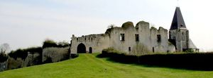
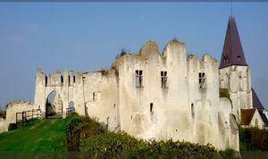
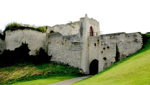
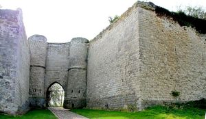
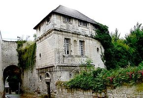

Recensement Jean-Claude Truffet
| Département | 80 — Somme |
| Canton | Ailly-sur-Somme |
| Commune | Picquigny |
| Type d'édifice | Forteresse |
| Période d'origine | XIII-XIV |
| Coordonnées GPS | 49° 56' 36" Nord 2° 08' 28" Est |





PICQUIGNY, par alliance avec Robert III d'Ailly-le-Haut-Clocher, le château passe entre les mains de la famille d'Ailly. En 1470, le château est incendié par les Français, s'enfuyant devant les troupes de Charles le Téméraire qui quelques jours plus tard achèveront sa ruine. La courtine sud est reconstruite après 1475. Au XVIe siècle, les travaux continuent et donnent au château médiéval une allure plus résidentielle avec un système défensif remodelé. Dans le second quart du XVIe siècle, Antoine d'Ailly augmente la superficie du château dont il fait remparer les terres-pleins et adosse contre l'épaisse courtine sud du grand bâtiment, un corps de logis, cantonné à l'est d'un pavillon, dit Pavillon Renaissance, portant autrefois la date de 1539. Il répare aussi certainement la Porte de Gard qui porte ses armoiries. La seconde campagne de construction complètera la précédente, par le réaménagement de la porte d'entrée au sud et des tours et par la construction au nord du pavillon Sévigné. Témoin du travail mené par Les plus anciens vestiges, que sont les tours d'entrée, la barbacane, la porte du Gard et la tour Est, ne datent cependant que de la première moitié du XIVe siècle, peut-être sous Renaud de Picquigny ou de sa fille Marguerite qui, à sa mort, laisse la seigneurie à sa cousine, également prénommée Marguerite, seigneur de Picquigny, la façade de la cuisine porte sur l'un de ses pilastres la date de 1575 ainsi que les initiales entrelacées P.E.F.D.W. (Philibert-Emmanuel d'Ailly et Françoise de Warty, sa mère), et la voûte de cette cuisine porte dans un cartouche la date de 1583 (seul le dernier chiffre est encore visible). Passé en 1620 à Honoré d'Albert, duc de Chevreuses et de Chaulne, le château est vendu le 27 avril 1774 à Pierre Bryet , à Liefman Calmer le 24 avril 1779, puis à Charles-Philippe, comte d'Artois, avant d'être finalement vendu comme bien national le 29 nivôse de l'an III. La dernière propriétaire, la comtesse Aymar de la Rochefoucault, lègue les ruines du château le 12 août 1912 à la Société des Antiquaires de Picardie.
PICQUIGNY, les plus anciens vestiges, que sont les tours d'entrée, la barbacane, la porte du Gard et la tour Est, ne datent cependant que de la première moitié du XIVe siècle, peut-être sous Renaud de Picquigny. Le plan du château, dépourvu de donjon, suivait primitivement un tracé parallélépipédique irrégulier cantonné de tours aux angles et de part et d'autre de l'entrée méridionale, également précédée d'une fausse barbacane. Les vestiges du château ne comportent plus de toiture, hormis le pavillon Sévigné, dont le dernier étage est amputé pour former un faux attique et couvert d'une toiture en pavillon à tuiles plates. L'élévation comporte un niveau de sous-sol abritant les celliers voûtés en berceau plein cintre et passages souterrains. L'un d'eux aboutit à une prison logée dans la tour nord-est, voûtée en cul-de-four et voûtes d'ogives au profil chanfreiné. Le rez-de-chaussée était occupé par les salles de garnisons et les communs. La cuisine et l'arrière-cuisine, aménagées dans la tour Est de l'entrée, ont respectivement gardé une voûte d'arêtes à lunettes et un départ de voûte d'ogives. Les deux niveaux supérieurs d'étages carrés accueillaient la grande salle de réception et les appartements privés. Les pavillons étaient des organes de distribution logeant des escaliers droits maçonnés rampe sur rampe sur voûte en anse de panier. Au milieu du corps principal, une tourelle polygonale dans oeuvre comportait également un escalier à vis maçonné sans jour.
Éléments protégés MH : les ruines du château de Picquigny : classement par arrêté du 11 septembre 1906.
Famille de Philibert-Emmanuel d'Ailly "
Picquigny GPS : 49° 56' 36" Nord 2° 08' 28" Est